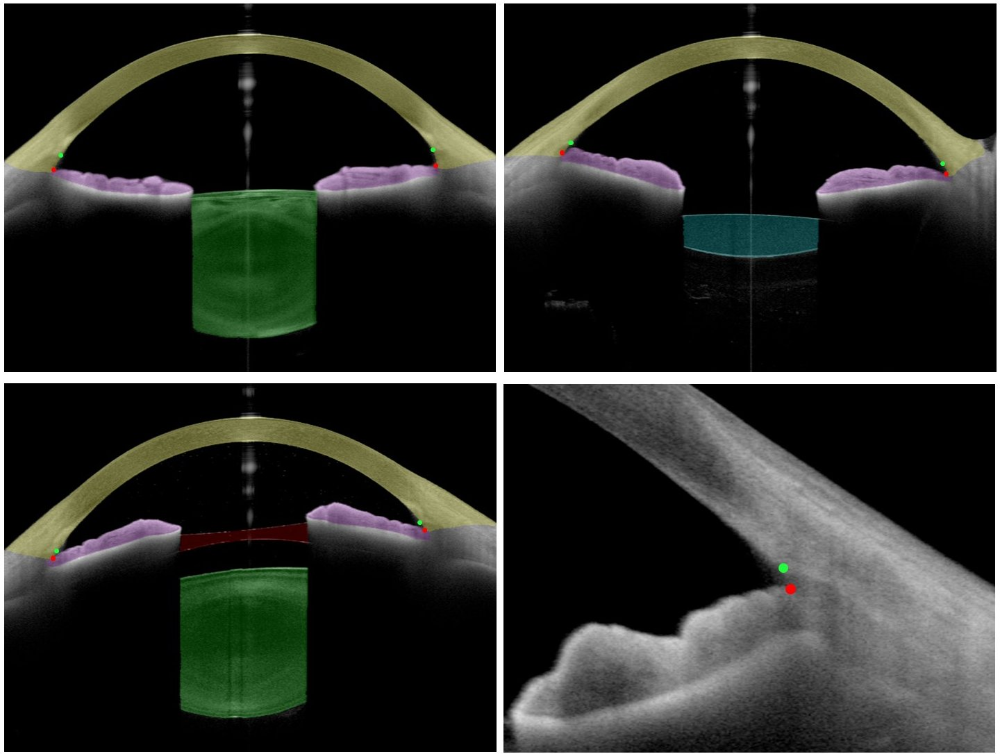
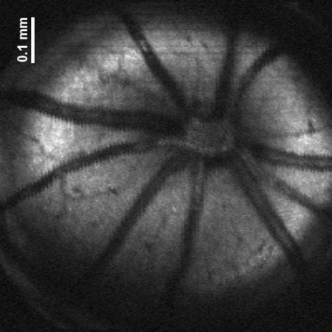
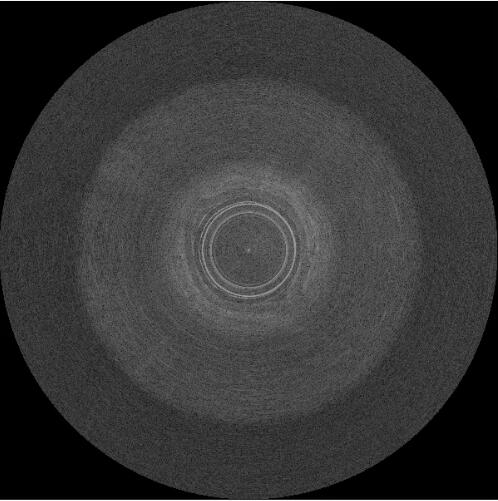

Projects

Analysis of Anterior segment-OCT (AS-OCT) images based on Multitask learning | Using deep learning methods to automatically assess the AS-OCT images
- Built a dataset of AS-OCT images from 200 patients.
- Proposed the first multitask deep learning method for simultaneous segmentation and landmark detection in AS-OCT images, whose performance is comparable to advanced physicians.
- Our method outputs five segmentation masks including the cornea, iris, lens, ICL and IOL, and two landmark detection targets including SS and IR. Compared to previous work, we are the first to include almost all of the important structures in the anterior segment.
- Designed an automatic method to perform refraction correction for accurate quantification in AS-OCT images.
- Implemented automatic assessment of anterior segment by measuring comprehensive clinical parameters for diagnosis, surgery planning, and post-surgery assessment.

Prediction of the frequencies of drug side effects
- Proposed a new deep-learning network for predicting the frequencies of drug side effects by using similarity information and drug molecular structure features, achieving state-of-the-art results.
- Designed a framework for case study by performing association prediction followed by frequency prediction of drug side effects for real-world applications.
- Designed a new loss function that improves the method's ability to discriminate between discrete regression targets.

Robot-assisted wide-field OCT system | Combining a robot arm with a wide-field OCT system for fast and accurate 3D imaging and modeling of objects
- Designed and built a wide-field OCT system and mounted the sample arm of the OCT system on a 6-axis robotic arm.
- Implemented the postprocessing of data and real-time display of images.
- Demonstrated system performance for in vivo imaging of entire human faces and generated human face point cloud for accurate surface reconstruction.

OCT systems for small animals | SSOCT and SDOCT systems primarily for imaging small animals.
- Developed the software for system control, data acquisition, and preview image generation for our SSOCT and SDOCT systems.
- Implemented real-time image processing by using NVIDIA GPU and CUDA programming.
- Designed and built the data acquisition system in our SDOCT system, achieving a lateral resolution of 3.9 um.
- Participated in the design and build of the optical systems for our SSOCT and SDOCT systems.
- Conducted ex vivo imaging of mouse colon and porcine coronary arteries as well as in vivo imaging of human fingerprints, human retina, and mouse retina.

Multimodal endomicroscopy system | Simultaneous OCT and fluorescence imaging based on a dual-modality catheter.
- Designed and built the control systems and data acquisition systems for OCT and fluorescence imaging.
- Developed the software for system control, data acquisition, and image generation.
- Implemented control of rotary junction and master/slave communication to perform intravascular imaging.
- Participated in the design and build of optical systems.
- Participated in the design and build of a dual-modality catheter.